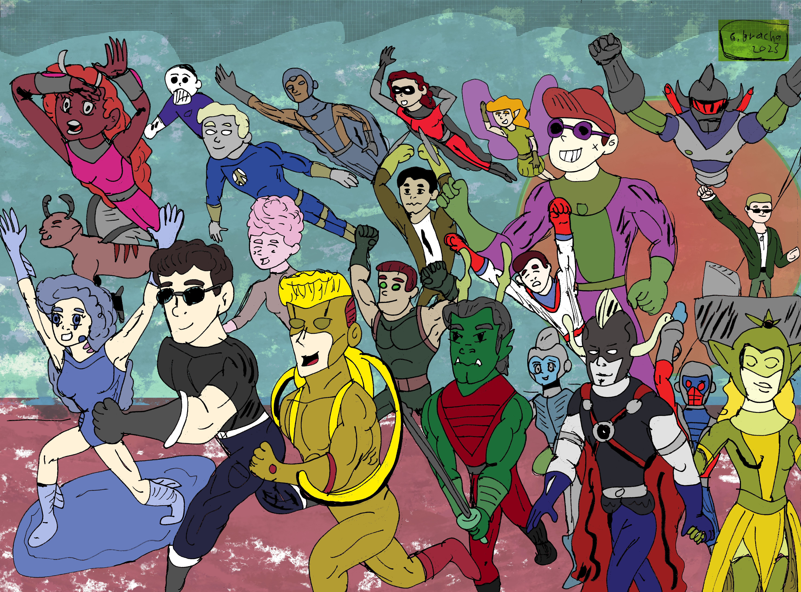

הסיפור
לכל אחד יש לו סיפור חיים משלו: מהלידה דרך החיים במלואם שמסתיימים להם בדרך לא צפויה,
עולם המצפן אינו עולם רגיל כמו שלכם, אבל הוא היה פעם כמוהו, עד שיום אחד הכל השתנה...
כאשר אירוע לא רגיל בא ושינה את העולם שלנו מקצה לקצה, הכל השתנה: הטבע, החיות ואפילו היבשות.
האנושות חוותה לה משבר לא רגיל, אבל בכל פעם כשחווינו משברים, תמיד יהיו גיבורים שיעזרו לנו בשעת משבר...
אז מהו הסיפור האמיתי?
את זה תצטרכו לגלות בעצמכם
כל אחד משלושת העמודים האחרים באתר הינו מוקדש לפן אחר המהווה חלק משמעותי מהעולם שלנו, תפקידכם הוא להרכיב את החלקים לסיפור אחד שלם
שיהיה לכם בהצלחה
על החתום, האיש שבצללים
נ.ב. אם תרצו להראות איך הרכבתם את הסיפור, תוכלו לשתף אותו בקבוצת הפייסבוק של עולם המצפן
אז קדימה, הגיבורים מחכים לפקודתך
